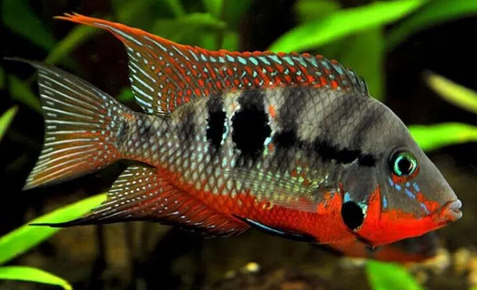

Systématique
- Ordre : Cichliformes
- Famille : Cichlidae
- Genre : Thorichthys
- Espèce : T. meeki

Thorichthys meeki, connu sous le nom commun de "Cichlidé à gueule de feu", est une espèce emblématique d'Amérique Centrale. Il doit son nom à la coloration rouge écarlate intense qui couvre sa gorge, son ventre et le bas de ses opercules, particulièrement spectaculaire chez les mâles en parade.
Il mesure adulte environ 12 à 15 cm. Son corps est gris bleuté avec des reflets irisés, marqué par une tache noire caractéristique sur l'opercule (simulant un œil pour tromper les prédateurs) et une autre sur le flanc.
Bien que territorial, c'est l'un des cichlidés d'Amérique Centrale les plus "pacifiques" et les plus adaptés aux aquariums communautaires de volume moyen.
C'est un poisson territorial qui vit en couple. Son comportement social est fascinant : pour intimider un rival ou défendre son territoire, il gonfle sa gorge rouge et écarte ses opercules, doublant ainsi le volume apparent de sa tête. Ces joutes d'intimidation remplacent souvent les combats physiques réels.
Il occupe la zone inférieure de l'aquarium. Comme de nombreux cichlidés, il aime fouiller le substrat (comportement géophage modéré) pour chercher sa nourriture, il faut donc prévoir un sable non coupant.
Mode : ovipare (pondeur sur substrat découvert).
Le couple nettoie soigneusement une pierre plate ou une racine. La femelle y dépose plusieurs centaines d'œufs. Les deux parents participent activement à la garde du territoire et des œufs, puis des alevins.
Pendant la période de reproduction, le couple devient beaucoup plus agressif envers les autres occupants de l'aquarium pour protéger sa progéniture.
Dimorphisme sexuel : Le mâle est généralement plus grand, plus coloré (le rouge de la gorge est plus intense et étendu) et ses nageoires dorsale et anale se terminent en pointes effilées, formant de longs filaments. La femelle est plus terne et plus petite.
Espérance de vie : Environ 8 à 10 ans.
Il est originaire de la péninsule du Yucatán (Mexique), du Belize et du Guatemala. Il fréquente les rivières à courant lent, les lagunes et les fameux "Cenotes" (gouffres remplis d'eau). Il préfère les eaux claires à fond sablonneux ou vaseux, souvent calcaires et dures.
Répartition

Origine naturelle :
- Amérique Centrale.
- Mexique (Péninsule du Yucatán).
- Belize.
- Guatemala.
Paramètres de maintenance
Température : 23 à 28 °C.
pH : 6,5 à 8,0 (préfère une eau neutre à légèrement alcaline).
GH : 8 à 20 °dGH (apprécie l'eau dure).
Volume conseillé : Minimum 200 à 250 L pour un couple. Un bac de 120 cm de façade est recommandé pour permettre l'établissement de territoires.
Régime alimentaire
Régime : omnivore.
Dans la nature, il consomme des invertébrés benthiques, des algues et des détritus.
En aquarium, il est vorace et peu difficile. Une base de granulés pour cichlidés, complétée par du vivant/congelé et un apport végétal (spiruline, épinard) est idéale pour sa santé et ses couleurs.